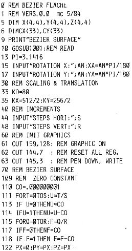

80-Bus Journal |
April/Mai/Juni 1984 · Ausgabe 2 |
Meine Grafikkarte ist aufgebaut und funktioniert! Hinter diesem einfachen Satz steckt wieder eine schweißtreibende Arbeit, die eigentlich nicht nötig gewesen wäre; denn das Layout der Karte ist hervorragend.
Zunächst wurden in der Stückliste wieder mal einige Teile übersehen. So fehlen folgende ICs mit Sockeln:
1 LS 122
1 LS 153
1 LS 154
1 LS 173
Das Warten auf die nachbestellten ICs war sehr unangenehm, nachdem die Karte ansonsten fertig bestückt vor mir lag.
Nach Eintreffen der ersehnten Chips gab es für mich deshalb kein Zögern mehr, und die Karte wurde sofort in freudiger Erwartung in den Bus geschoben. Die Umschaltung per Software auf Grafik mit
O 9F 80
funktionierte auch augenblicklich, aber der Bildschirm blieb dunkel.
Dieser Zustand hielt auch einige Tage an. Diese Zeit möchte ich Ihnen nicht schildern, sie stand der Fehlersuche bei der FDC-Karte in nichts nach, nur waren meine Ergebnisse hier sehr überraschend: fünf unterbrochene Verbindungen an IC-Sockeln auf der Karte.
Ich habe nun einige Karten aus der neuen Serie nachgemessen, konnte aber keine Fehler finden. Sollte ich hier nach so langer Löterfahrung tatsächlich gleich fünfmal „Mist gebaut“ haben? Ich kann es nicht glauben. Sicherheitshalber gebe ich Ihnen die fehlerhaften Verbindungen an; möglicherweise findet man auf der einen oder anderen Karte den gleichen Fehler wieder:
D5 Pin7 – D6 Pin7
D5 Pin25 – D6 Pin14
D3 Pin2 – D4 Pin3
D9 Pin13 – Widerstand
D24 Pin3 – D20 Pin13
Dann stellte ich noch eine Unverträglichkeit des Videoausgangs mit meinern Monitor fest: kurz nach dem ersehnten Erscheinen eines Grafik-Bildes brach die Helligkeit zusammen. Das Anlöten eines 390Ω Widerstandes zwischen Videoausgang und Masse brachte Abhilfe. Seither läuft die Grafik und reizt mich, die tollsten Grafikprogramme auszuprobieren oder zu programmieren; hoffentlich setzen sich bald einige Leser daran, denn nach jahrelanger „Klötzchengrafik“ ist der Bildschirm nun schon ein Erlebnis.
Die Demonstrationsprogramme von Herrn Klaassen sind sehr schön. Sie finden einige Beispiele in diesem Heft. Der Pacman läuft einwandfrei, und auch meine alten Videobilder habe ich nun schon auf dem Bildschirm betrachtet.
In c’t 5/6-84 Seite 46 ff sind einige Vorschläge, die man verwenden könnte. Das „Moiree“ davon habe ich schon getestet.
mc 5/84 brachte ein Beispiel für gekrümmte Flächen (Seite 75). Dieses reizvolle Programm lief aber nach einer Modifikation nicht wie erwartet (es stellte seltsame Linien dar). Ich drucke meine veränderte Version hier ab, vielleicht findet jemand den Fehler (der ja auch im Programm selbst liegen kann), Leider bin ich kein Mathematiker; die Formeln sind für mich absolut nicht nachprüfbar.

| Seite 10 von 52 |
|---|